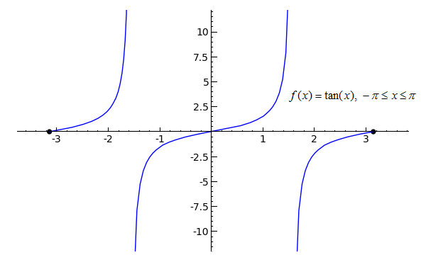
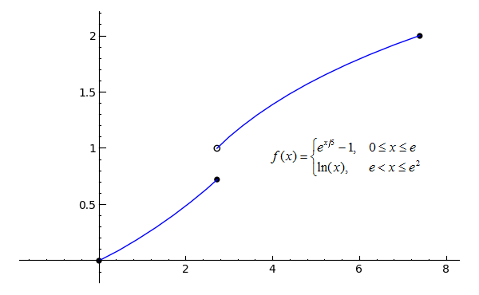
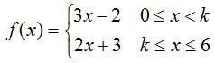
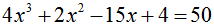
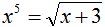

Continuity
Much of limit analysis relates to a concept known as continuity. A function is said to be continuous on an interval when the function is defined at every point on that interval and undergoes no interruptions, jumps, or breaks. If some function f(x) satisfies these criteria from x=a to x=b, for example, we say that f(x) is continuous on the interval [a, b]. The brackets mean that the interval is closed -- that it includes the endpoints a and b. In other words, that the interval is defined as a ≤ x ≤ b. An open interval (a, b), on the other hand, would not include endpoints a and b, and would be defined as a < x < b.
For an example of continuity, start a new worksheet called 02-Continuity, then recreate the following graph using the provided code. (The f(x)=... is superimposed).

p1 = plot(x^2, x, 0, 1) p2 = plot(-x+2, x, 1, 2) p3 = plot(x^2-3*x+2, x, 2, 3) pt1 = point((0, 0), rgbcolor='black', pointsize=30) pt2 = point((3, 2), rgbcolor='black', pointsize=30) (p1+p2+p3+pt1+pt2).show(xmin=0, xmax=3, ymin=0, ymax=2)Toggle Explanation Toggle Line Numbers
1) Plot x2 from x=0 to x=1
2) Plot -x+2 from x=1 to x=2
3) Plot x2-3*x+2 from x=2 to x=3
4) Create a black point at (0, 0)
5) Create another black point at (3, 2)
6) Combine the plots and points into a single graph with the given bounds
The function f(x) in the graph is known as a piecewise function, or one that has multiple, well, pieces. As you can see, the function travels from x=0 to x=3 without interruption, and since the two endpoints are closed (designated by the filled-in black circles), f(x) is continuous on the closed interval [0, 3]. To think of it another way, if you can trace a function on an interval without picking up your pen (and without running over any holes), the function is continuous on that interval.
Using our knowledge of limits from the previous lesson, we can say that:
 and
and

The Intermediate Value Theorem
One of the more important theorems relating to continuous functions is the Intermediate Value Theorem, which states that if a function f is continuous on a closed interval [a, b] and k is any number between f(a) and f(b), then there must exist at least one number c such that f(c) = k. In other words, if f is continuous on [a, b], it must pass through every y-value bounded by f(a) and f(b). In the continuous function graphed above, for example, f(0) = 0 and f(3) = 2, so f(x) must pass through all y-values bounded by and including 0 and 2 on the interval [0, 3], which as one can see, it does.
Look at this example, now, of a function that is not continuous on the interval for which it is shown.
p1 = plot(2*x, x, 0, 1) p2 = plot(-x+3, x, 1, 2) p3 = plot(-(x-3)^3+2, x, 2, 3) l1 = line([(1, 2.1), (1, 2.9)], linestyle='--') pt1 = point((0, 0), rgbcolor='black', pointsize=30) pt2 = point((1, 2), rgbcolor='white', faceted=True, pointsize=30) pt3 = point((1, 3), rgbcolor='black', pointsize=30) pt4 = point((2, 1), rgbcolor='black', pointsize=30) pt5 = point((2, 3), rgbcolor='white', faceted=True, pointsize=30) pt6 = point((3, 2), rgbcolor='black', pointsize=30) (p1+p2+p3+l1+pt1+pt2+pt3+pt4+pt5+pt6).show(xmin=0, xmax=3, ymin=0, ymax=3)Toggle Explanation Toggle Line Numbers
1) Plot 2*x from x=0 to x=1
2) Plot -x+3 from x=1 to x=2
3) Plot -(x-3)3+2 from x=2 to x=3
4) Create a dashed line to indicate that the function jumps to a y-value of 3
when x is equal to 1
5-10) Create open (faceted) or closed (filled-in) points to indicate whether the intervals are open
or closed
11) Combine the plots, line, and points into a graph with the given bounds
The function shown in the graph is not continuous on the closed interval [0, 3], since it has discontinuities at both x=1 and x=2. A discontinuity is any x-value at which a function has an interruption, break or jump -- something that would require you to pick up your pen if you were tracing the function. The filled-in black circles, again, indicate that the interval includes that point, while the open circles indicate that the interval excludes that point. The dashed line at x=1 shows that f(1) = 3, not 2.
Since the above graph has at least one discontinuity, it does not satisfy the requirements of the Intermediate Value Theorem and therefore does not have to pass through every y-value between f(0) and f(3).
Even though f(1) = 3, however, the limit of f(x) as x approaches 1 does not equal 3, since the function approaches a value of 2 from both sides of x=1. But what about the limit of f(x) as x approaches 2? The function does not approach one specific value from either side of x=2, but we can still describe its behavior from the right or the left. This is the basis of one-sided limits, which is the topic of the next section.
Practice Problems
1)

# Just a note -- sin(x) transformed doesn't actually follow the same curve as x2 p1 = plot((x+1)^2-1, x, -2, 0) p2 = plot(5/4*sin(pi*x/2), x, 0, 2) p3 = plot((x-3)^2-1, x, 2, 4) pt1 = point((-2, 0), rgbcolor='black', pointsize=30) pt2 = point((4, 0), rgbcolor='black', pointsize=30) (p1+p2+p3+pt1+pt2).show()Toggle answer Toggle Line Numbers
2) 
p = plot(tan(x), x, -pi, pi, randomize=False, plot_points=101) pt1 = point((-pi, 0), rgbcolor='black', pointsize=30) pt2 = point((pi, 0), rgbcolor='black', pointsize=30) (p+pt1+pt2).show(xmin=-pi, xmax=pi, ymin=-10, ymax=10)Toggle answer Toggle Line Numbers
3) 
# exp() means 'e to the ___' p1 = plot(exp(x/5)-1, x, 0, e) p2 = plot(ln(x), x, e, e^2) pt1 = point((0, 0), rgbcolor='black', pointsize=30) pt2 = point((e, exp(e/5)-1), rgbcolor='black', pointsize=30) pt3 = point((e, 1), faceted=True, rgbcolor='white', pointsize=30) pt4 = point((e^2, 2), rgbcolor='black', pointsize=30) (p1+p2+pt1+pt2+pt3+pt4).show(ymin=0, ymax=2)Toggle answer Toggle Line Numbers
Determine the value or values of k that will make each function continuous on the given interval.*
4) 
Toggle answer
5)

Toggle answer
6)

Toggle answer
Use the Intermediate Value Theorem to demonstrate that a solution exists to each equation on the interval given.
7) ; [1, 3]
Toggle answer
8)
 ; [-1, 1]
; [-1, 1]
Toggle answer
9) ; [1, 2]
Toggle answer
*As a Sage-based way of checking your answers, you can use solve(...==..., k) to solve the given equation for k. For example, to solve for x when the expression x2-4*x+4 is equal to 0, you would use:
solve(x^2-4*x+4==0, x)Two equals signs (as used here) signifies a test for equality, while a single equals sign signifies assignment. For example, x==1 means 'does x equal 1?' whereas x=1 means 'assign 1 to x'.